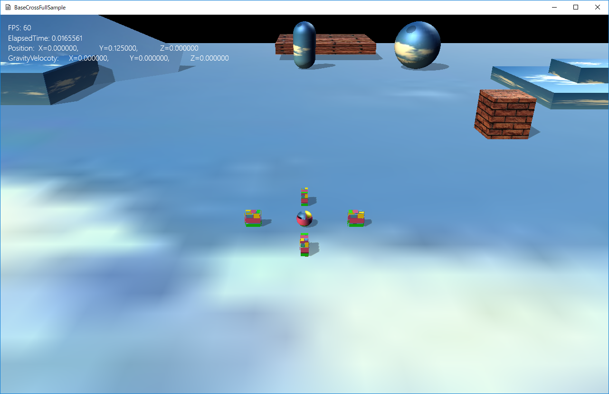

図1101a
このサンプルからXBoxコントローラ対尾応になります。また、多くのサンプルがキーボードでも操作可能です。
| クラス名 | BaseCrossでの実装 | BaseCross64での実装 |
|---|---|---|
| Collision | 衝突判定。Rigidbodyと相互関係がある | 衝突判定。判定と衝突した相手からのエスケープのみ行う |
| Gravity | 重力。Behavior（行動）として実装。Rigidbodyと相互関係がある | 重力。コンポーネントとして実装。Collisionと相互関係がある。 |
| Rigidbody | 簡易物理演算。コンポーネントとして実装。CollisionおよびGravityと相互関係がある | 物理エンジンとして実装。コンポーネントとして実装 |
| PsBody | 物理エンジンとして実装。コンポーネントとして実装 | 廃止 |
//初期化
void Player::OnCreate() {
//初期位置などの設定
auto Ptr = AddComponent<Transform>();
Ptr->SetScale(0.25f, 0.25f, 0.25f); //直径25センチの球体
Ptr->SetRotation(0.0f, 0.0f, 0.0f);
Ptr->SetPosition(0, 0.125f, 0);
//CollisionSphere衝突判定を付ける
auto PtrColl = AddComponent<CollisionSphere>();
//重力をつける
auto PtrGra = AddComponent<Gravity>();
//文字列をつける
auto PtrString = AddComponent<StringSprite>();
PtrString->SetText(L"");
PtrString->SetTextRect(Rect2D<float>(16.0f, 16.0f, 640.0f, 480.0f));
//影をつける（シャドウマップを描画する）
auto ShadowPtr = AddComponent<Shadowmap>();
//影の形（メッシュ）を設定
ShadowPtr->SetMeshResource(L"DEFAULT_SPHERE");
//描画コンポーネントの設定
auto PtrDraw = AddComponent<BcPNTStaticDraw>();
//描画するメッシュを設定
PtrDraw->SetMeshResource(L"DEFAULT_SPHERE");
PtrDraw->SetFogEnabled(true);
//描画するテクスチャを設定
PtrDraw->SetTextureResource(L"TRACE_TX");
SetAlphaActive(true);
//カメラを得る
auto PtrCamera = dynamic_pointer_cast<MyCamera>(OnGetDrawCamera());
if (PtrCamera) {
//MyCameraである
//MyCameraに注目するオブジェクト（プレイヤー）の設定
PtrCamera->SetTargetObject(GetThis<GameObject>());
PtrCamera->SetTargetToAt(Vec3(0, 0.25f, 0));
}
}
void SeekObject::OnCreate() {
auto PtrTransform = GetComponent<Transform>();
PtrTransform->SetPosition(m_StartPos);
PtrTransform->SetScale(0.125f, 0.25f, 0.25f);
PtrTransform->SetRotation(0.0f, 0.0f, 0.0f);
//オブジェクトのグループを得る
auto Group = GetStage()->GetSharedObjectGroup(L"SeekGroup");
//グループに自分自身を追加
Group->IntoGroup(GetThis<SeekObject>());
//Obbの衝突判定をつける
auto PtrColl = AddComponent<CollisionObb>();
//重力をつける
auto PtrGra = AddComponent<Gravity>();
//分離行動をつける
auto PtrSep = GetBehavior<SeparationSteering>();
PtrSep->SetGameObjectGroup(Group);
//影をつける
auto ShadowPtr = AddComponent<Shadowmap>();
ShadowPtr->SetMeshResource(L"DEFAULT_CUBE");
auto PtrDraw = AddComponent<BcPNTStaticDraw>();
PtrDraw->SetFogEnabled(true);
PtrDraw->SetMeshResource(L"DEFAULT_CUBE");
PtrDraw->SetTextureResource(L"TRACE_TX");
//透明処理をする
SetAlphaActive(true);
//ステートマシンの構築
m_StateMachine.reset(new StateMachine<SeekObject>(GetThis<SeekObject>()));
//最初のステートをSeekFarStateに設定
m_StateMachine->ChangeState(FarState::Instance());
}
void MoveBox::OnCreate() {
auto PtrTransform = GetComponent<Transform>();
PtrTransform->SetScale(m_Scale);
PtrTransform->SetRotation(m_Rotation);
PtrTransform->SetPosition(m_Position);
//OBB衝突j判定を付ける
auto PtrColl = AddComponent<CollisionObb>();
//重力をつける
auto PtrGra = AddComponent<Gravity>();
//影をつける
auto ShadowPtr = AddComponent<Shadowmap>();
ShadowPtr->SetMeshResource(L"DEFAULT_CUBE");
//描画処理
auto PtrDraw = AddComponent<BcPNTStaticDraw>();
PtrDraw->SetFogEnabled(true);
PtrDraw->SetMeshResource(L"DEFAULT_CUBE");
PtrDraw->SetTextureResource(L"WALL_TX");
PtrDraw->SetOwnShadowActive(true);
}
void FixedBox::OnCreate() {
auto PtrTransform = GetComponent<Transform>();
PtrTransform->SetScale(m_Scale);
PtrTransform->SetRotation(m_Rotation);
PtrTransform->SetPosition(m_Position);
//OBB衝突j判定を付ける
auto PtrColl = AddComponent<CollisionObb>();
PtrColl->SetFixed(true);
//タグをつける
AddTag(L"FixedBox");
//影をつける（シャドウマップを描画する）
auto ShadowPtr = AddComponent<Shadowmap>();
//影の形（メッシュ）を設定
ShadowPtr->SetMeshResource(L"DEFAULT_CUBE");
auto PtrDraw = AddComponent<BcPNTStaticDraw>();
PtrDraw->SetMeshResource(L"DEFAULT_CUBE");
PtrDraw->SetTextureResource(L"SKY_TX");
PtrDraw->SetFogEnabled(true);
PtrDraw->SetOwnShadowActive(true);
}